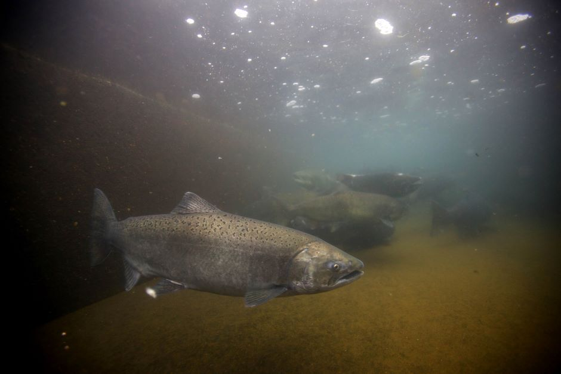

A small webpage on the importance of marine wildlife in Lake Michigan
Fishing in West Michigan is a huge part of the culture. Not only does it feed people, but it is also a huge industry that helps the economy during the summer months.
Charter fishermen open for business, as well as many of the seasonal restaurants. Fish are able to supply money to these communities to help keep them afloat.
Fish populations are able to be kept in check with fishing. In keeping salmon/trout populations at a stable area, it helps keep the surrounding wildlife, like baitfish in check. This ties in with the food web in keeping everything as balanced as possible with predator and prey. Fishing is also able to help make sure invasive species are taken care of to protect local wildlife.